（２８，２８）
ギルドを作るためには以下の４つの条件を満たす必要がある。
確認・準備してからクエを行おう。
（１） リダ（ギルマスになる人）がＬｖ５０以上
（２） ３人以上でＰＴを組む
・ＰＴメンバーはギルド未加入でなくてもよい。
→ 最終的に未加入のメンバーのみ新ギルドに入るという処理になる。
・市民称号はなくても可。
・黒落ち可。
（３） １００万Ｇ
最後にガルプレンに話しかけ、ギルドを作成する際に必要。
（４） リダのクエ欄の空きが４つ以上あること
このクエを含め、途中同時に４つのクエを受諾する事になる。
クエ欄の空きが３つ以下だと進行できないので注意。
ガルプレンは、ブルンギルド連合会に入って少し左上（２８，２８）にいる。
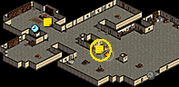 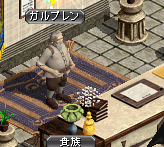
（９８，６２）
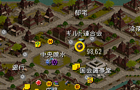 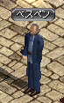
話しかけて
「一つの力の為に：怪しい動き」を受諾。
以下はＰＴメンバー全員で行く事（２人以上でＯＫ、黒落ち不可）。
全員同じマップにいないとＵＰしない。
古都冒険家協会へ行き、
上にある移動ポータルに入り、冒険家協会バーへ。
入って左上にいるジョン・マルコの前を記憶１推奨。
ジョン・マルコ（冒険家協会バーにいる）
１１６２１
で旧レッドアイ研究所Ｂ１へ飛び、そこからＢ３へ。
◆レッドアイ幹部のタゲを取る
レッドアイ幹部のタゲを取るとＵＰ。
→同じマップにいても、全員が近く（ＥＸＰが届く範囲？）にいないとＵＰしないという情報あり。
◆ＵＰしなかった場合は、リダがいったんマップから出て入りなおそう
ＰＴメンバーが全員近くにいなかった、などの理由で
レッドアイ幹部のタゲを取ってもＵＰしなかった場合、
そのままＰＴメンバーを近くに呼んで、再度チャレンジしてもＵＰしない事がある。
この場合、リダがいったんレッドアイ研究所Ｂ３のマップから出て、
再度マップに入りなおしてチャレンジするとＵＰするようだ。
◆イフリィトを倒す
次に、
左上「イフリィト祭壇」にいるイフリィトを倒してＵＰ。
（９８，６２）
（３６，１０１）
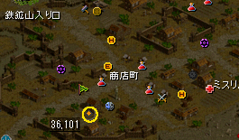 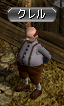
話しかけて
「一つの力の為に：修復」を受諾。
ダークエルフを倒す
ジョン・マルコ（冒険家協会バーにいる）
１１５３１
でハノブ高台望楼Ｂ３へ飛び、そこから２Ｆへ。
イスペンドは２Ｆの左上エリアにいる。
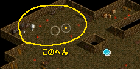

ダークエルフを倒す
ジョン・マルコでハノブ南側望楼Ｂ３へ飛ぶと、
そこから１Ｆまでの距離が長いため、
町から走った方が早そう。
イストゥールは１Ｆの右上の方にいる。
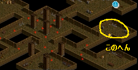 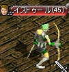
（３６，１０１）
（８９，７９）
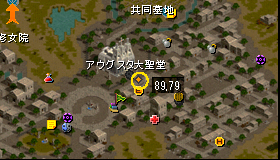 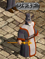
話しかけて
「一つの力の為に：司祭の探索」を受諾。
（１８４，１６）
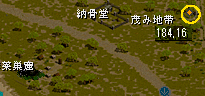 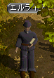
（８９，７９）
（２８，２８）
ジョン・マルコ（冒険家協会バーにいる）
１２１４１
でシーフギルドの倉庫［Ｃ］に飛び、
いったんブリッジに出て
シーフギルドの倉庫［Ｂ］へ。
対象ＭＯＢはローグ。
ドロップは１００％ではない模様。
私は何匹か倒してＵＰした。
（２８，２８）
１）今すぐ支払います。
を選んで１００万Ｇを払うと、
以下のようなギルド名を決める画面が出てくる。
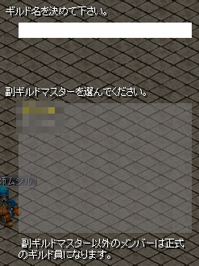
希望のギルド名を入力し、決定ボタンを押すと
ギルドが作成される。
ギルド未加入で、Ｌｖ１０以上の黒落ちしていないメンバーが
新ギルドに自動的に加入する。
市民称号を取っていなくても、新ギルドには入れる模様。
なお、ギルドを作りたて（＝ギルドＬｖ１）の際に、
ギルドＬｖを一気に上げることが出来る、ちょっと裏技的な方法があるので紹介する。
実現可能な人は参考にされたし。
◆作りたてギルドのギルドＬｖを一気に上げる方法
１．「大量の報酬を得られるクエを受けて、報酬を受ける直前で止めたキャラ」を準備する。
私はレポートクエ１の１４番で行った。
２．そのキャラを新ギルド作成時（もしくは作成直後）に新ギルドに加入させる。
３．Ｆ７でギルドウィンドウを開き、歯車アイコンをクリック、
「ギルド経験値獲得率変更」を選択する。
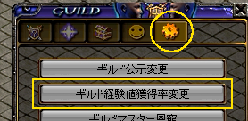
４．１０を入力して、ギルド経験値税率を１０％にする。
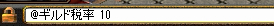
＜参考＞
ギルド経験値税率の設定可能な最大値は
１０÷ギルドLv（％）
という計算式で決められる。
よって、１０％という値は、ギルドLvが１の時にしか設定出来ない。
注意しよう。
５．ギルドウィンドウのメイン画面で、
経験値政策が１０％になっている事を確認する。
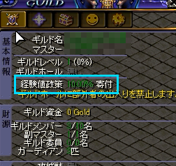
６．この状態で、大量の報酬をもらえるクエをＵＰする。
レポートクエ１の１４番（スフィア・パワキあり）でこれを行うと、
ギルドＬｖが８２まで上がった。
もっと効果的な方法があるかもしれないが、参考までに。
◆参考情報
レポートクエ２の１４番（スフィア・パワキあり）で行うとギルドLvが１１１になる模様。
経験値３億のクエでやるとギルドLvが４７になる模様。